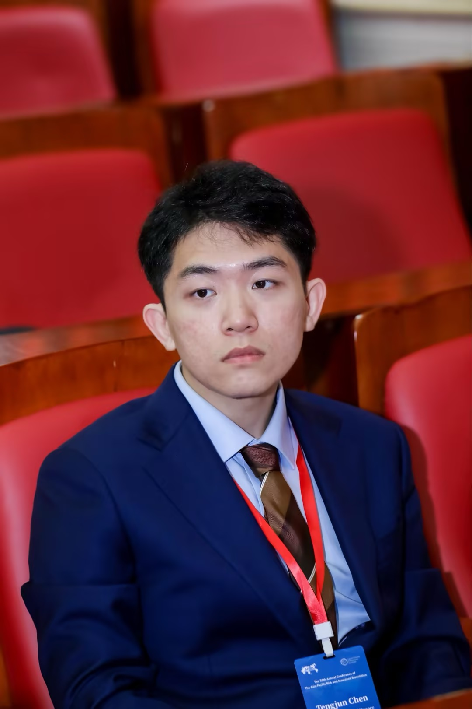
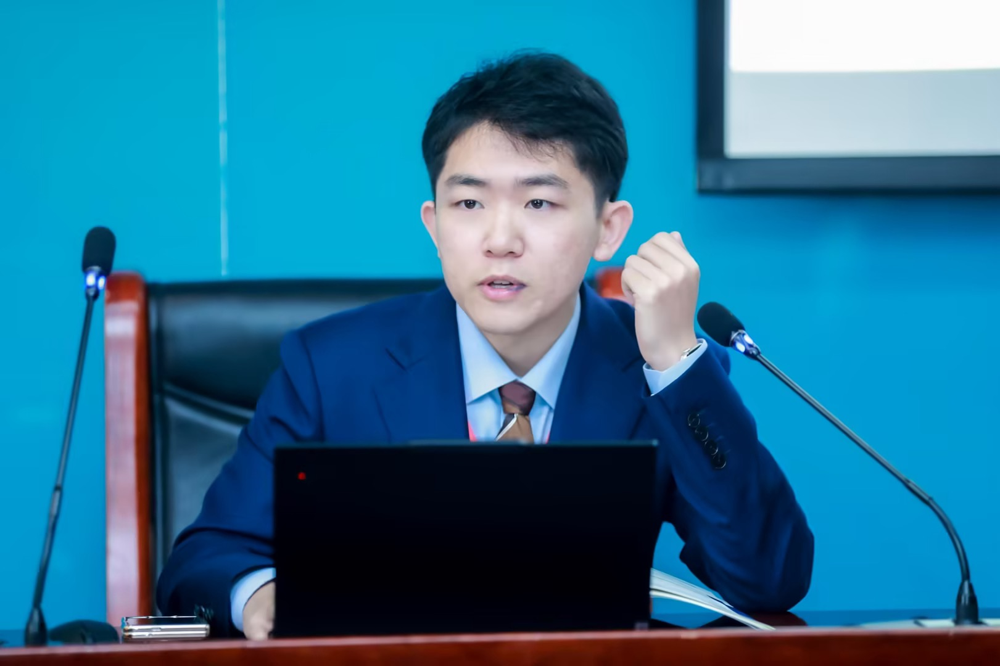
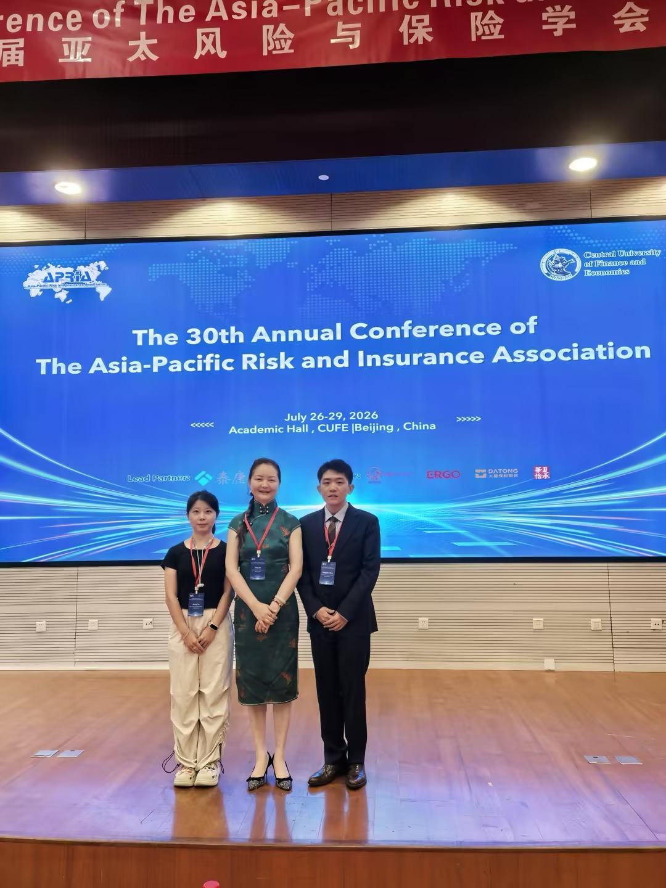

Agricultural insurance
Income protection, welfare effects, and public policy for producers facing volatile markets.
Insurance economics · actuarial science
Ph.D. candidate studying how insurance, data, and market design can protect agricultural producers from climate, price, and profit risk.

01 · Profile01 · 简介
Tengjun Chen is a Ph.D. candidate in Insurance at Shanghai University of Finance and Economics and a visiting Ph.D. student at the University of Hohenheim. His doctoral supervisor is Fang Su.
My research combines insurance economics, nonlinear dynamics, and machine learning to design better protection against risks that are difficult to price and share.
I focus on agricultural and non-life insurance, with particular attention to climate exposure, commodity-price dynamics, insurer risk transfer, and data-driven product design.
Income protection, welfare effects, and public policy for producers facing volatile markets.
Reinsurance, futures, tail risk, and the financial architecture of agricultural insurers.
Neural networks and nonlinear systems for weather-index and profit-insurance design.
陈腾军，上海财经大学保险学博士研究生、霍恩海姆大学访问博士，博士生导师为粟芳教授。
研究方向为保险经济学、非寿险精算与农业保险，重点关注气候风险、农产品价格波动、保险公司风险转移及数据驱动的保险产品设计。
研究市场波动下的农民收益保障、福利效应与公共政策。
关注再保险、期货、尾部风险与农业保险公司的风险管理架构。
将神经网络与非线性系统用于天气指数保险和利润保险设计。
02 · Publications02 · 学术论文
* Corresponding author* 通讯作者
03 · Trajectory03 · 学术经历
Host supervisor: Prof. Dr. Jörg Schiller. Research in agricultural insurance and insurance economics.
Supervisor: Fang Su. Advisory committee: Xudong Zeng and Yulin Feng.
合作导师：Prof. Dr. Jörg Schiller。研究方向为农业保险与保险经济学。
博士生导师：粟芳；导师组成员：曾旭东、冯玉林。

